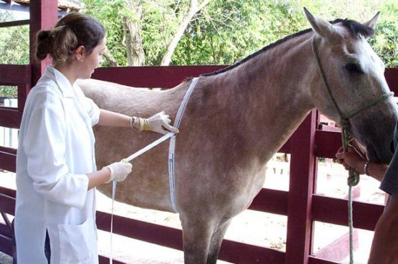
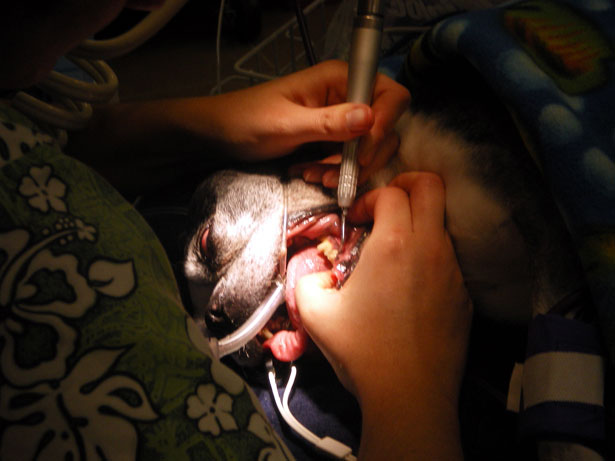

SERVIZIO VETERINARIO
Cure Preventive
Con delle cure preventive vogliamo mantenere il tuo animale domestico sano.
La chiave per una vita lunga e completa per il tuo gatto o cane è la prevenzione e la diagnosi precoce dei problemi di salute.
Il nostro centro offre una serie di servizi preventivi per proteggere la salute del tuo animale domestico e garantire un trattamento tempestivo della malattia.
- Esami di benessere e analisi del sangue (raccomandato ogni sei mesi)
- Vaccinazioni annuali
- Test per la filaria e prevenzione
- Controllo delle pulci e delle zecche
- Esame fecale (consigliato almeno una volta all'anno)
- Consultazioni comportamentali e nutrizionali
- Consultazioni di viaggio internazionali
Chirurgia
L'anestesia può fare paura ai proprietari di animali, lo sappiamo, anche noi abbiamo degli animali domestici! Il nostro centro offre ora interventi su tessuti molli, ortopedici e di emergenza a prezzi molto competitivi.
Utilizzando l'anestesia e le apparecchiature di monitoraggio all'avanguardia, puoi stare certo che il tuo animale è in mani attente e competenti. Vieni a trovarci e accertatene tu stesso!
Diagnostica
Avere un animale malato può portare molta ansia, quindi abbiamo trovato una soluzione! Al fine di accelerare la cura del tuo animale, il nostro centro offre risultati immediati attraverso laboratori in loco per analisi del sangue complete, radiologia ed ecografia. Puoi vivere serenamente sapendo che troveremo una diagnosi per il tuo animale il prima possibile.
Odontoiatria

Siamo lieti di annunciare l'apertura di un nuovo reparto dedicato alla cura dentale del tuo animale domestico. Infatti proprio come gli umani, gli animali con denti sani vivono più a lungo.
Ecco perché abbiamo creato un apposito spazio per la cura dentale per garantire che i nostri pazienti abbiano accesso alle migliori cure mediche possibili.
I servizi spaziono dalla pulizia dentale a denti da rimuovere.
Agopuntura e terapia acquatica
L'agopuntura e la terapia acquatica possono essere davvero utili in diversi casi, dall'artrite alla terapia fisica, sappiamo che l'esercizio fisico e il rilassamento vanno di pari passo con una vita sana e un rapido recupero post-operatorio, per curare il corpo e l'anima.
Stanza blu e servizi di eutanasia
Apprezziamo il legame tra te e il tuo animale domestico e comprendiamo quanto può essere stressante quando il tuo animale domestico è malato. La nostra Stanza blu, silenziosa e non clinica, è progettata per consentire ai proprietari di avere l'opportunità di visitare il proprio animale domestico ricoverato o consultare il medico. Quando arriva il momento di dire addio al tuo amato animale domestico, il nostro team dedicato si impegna a rendere il momento estremamente difficile il più semplice possibile sia per te che per il tuo animale domestico. La nostra camera offre uno spazio privato e confortevole per stare con il tuo animale domestico prima, durante e dopo l'eutanasia. Per coloro che desiderano salutarsi a casa, il nostro centro offre visite a domicilio per l'eutanasia nell'area provinciale di Trento.